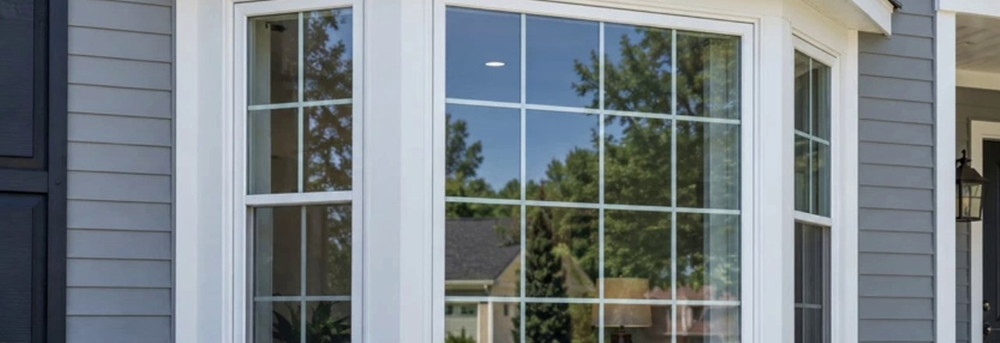

{{r.name}}★★★★★
{{r.text}}
Read MoreDrafts, fogging, sticking sashes, frame damage or moisture? Our Houston team evaluates your windows and the openings around them, then explains what we find in plain language. Schedule your free window inspection today!
Schedule Your Window InspectionA window inspection is a focused evaluation of each window unit and the opening around it. We review the frame, sill, glass, seals, hardware, operation and exterior conditions to find problems that affect comfort, energy efficiency, weather resistance or function.
In Houston’s heat and humidity, failing seals and worn weatherstripping quietly drive up cooling bills and let moisture in. An inspection catches those problems early, so you can decide between a simple repair and a replacement.

A useful inspection goes beyond the glass. We check every part of the window and surrounding opening that affects operation, sealing, weather resistance and everyday use.
You don’t have to wait for a visible problem. An inspection is worth scheduling when:
We treat every inspection as a fact-finding visit, not a sales pitch. We explain what we find and help you decide whether a repair or replacement makes more sense.
{{r.text}}
Read More